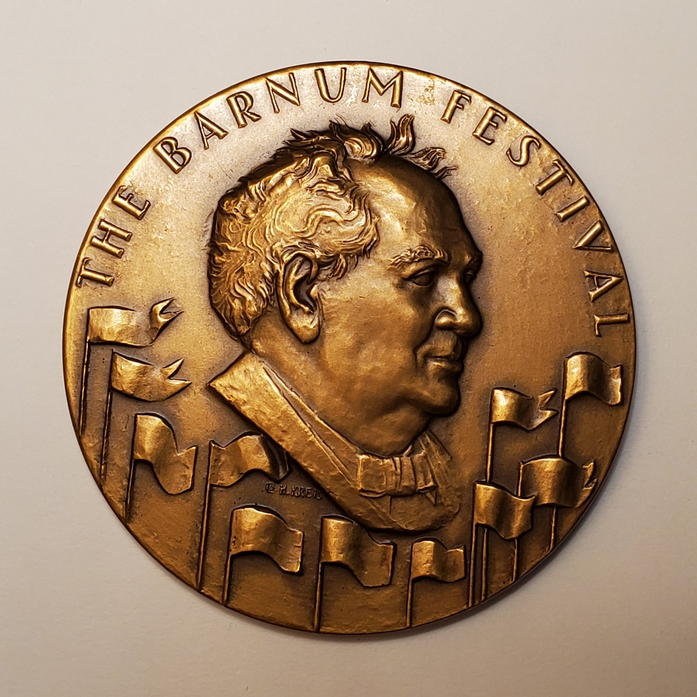
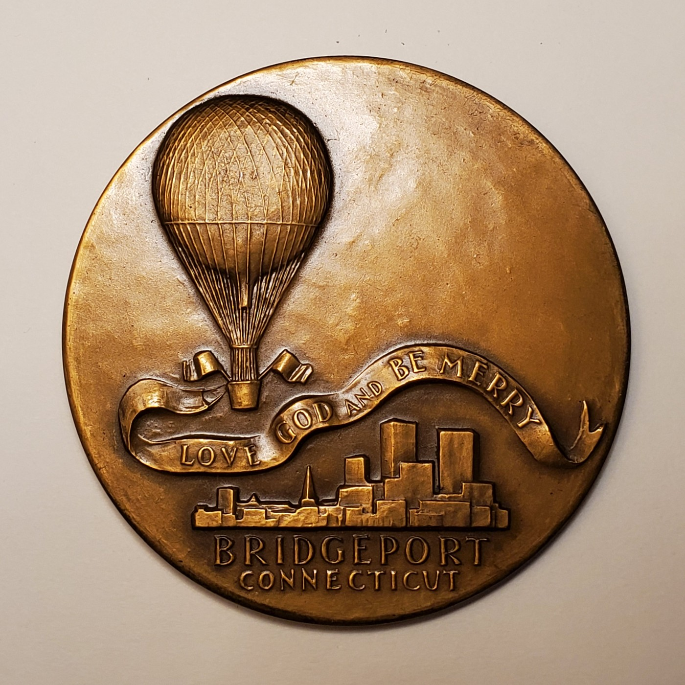
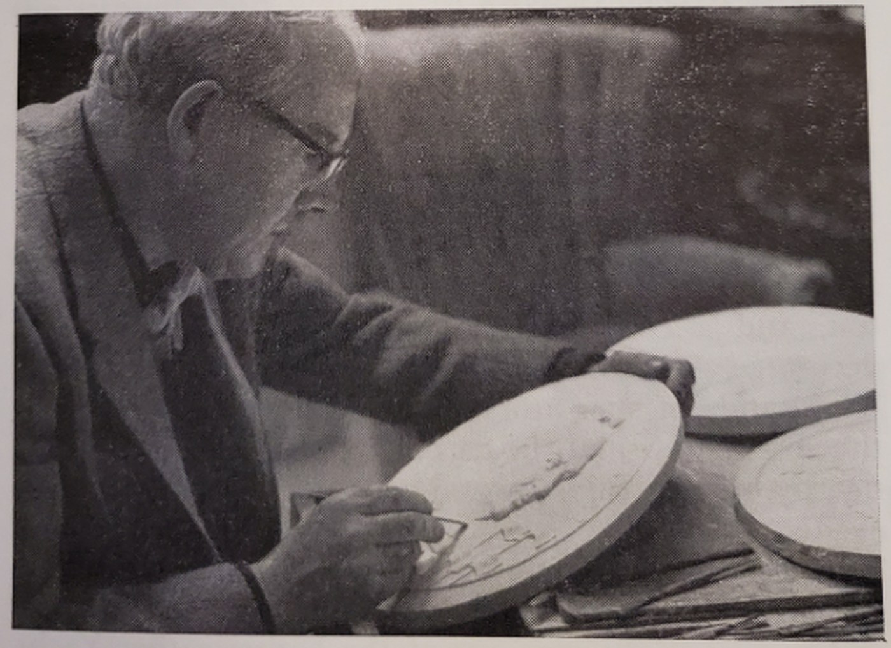
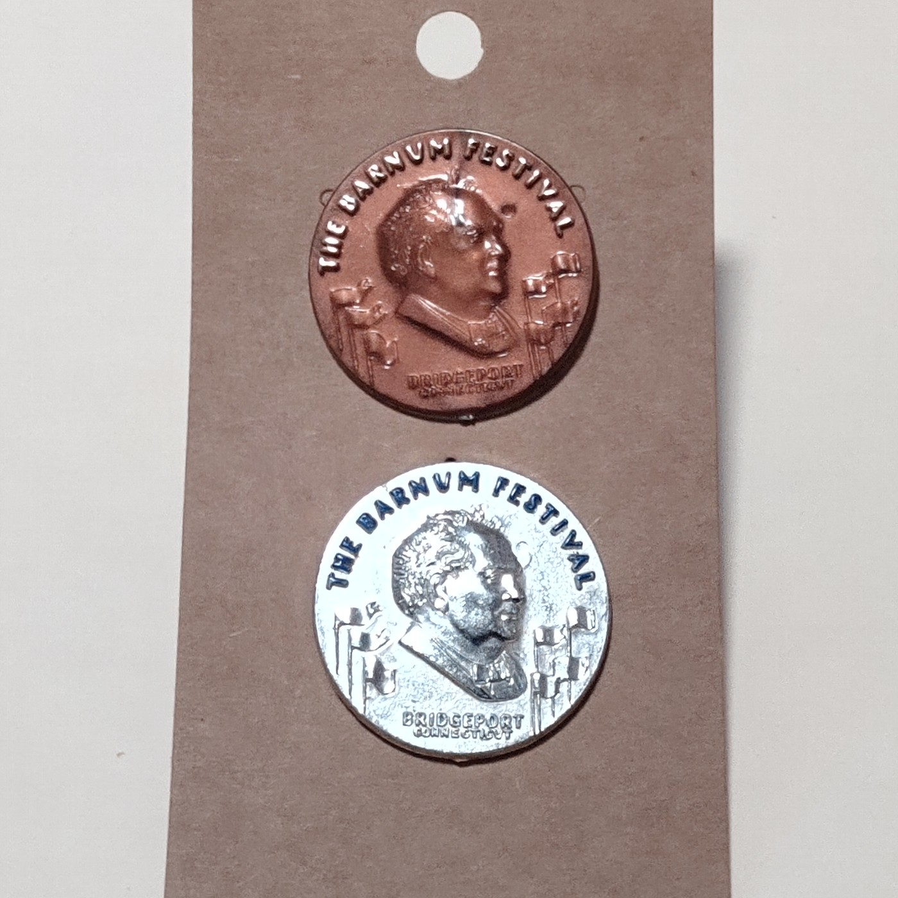

Competition award · 1959
Barnum
Festival
Kreis joined P. T. Barnum's portrait with festival banners, a balloon, and the Bridgeport skyline for the first medals awarded to winners of the festival's competitive events.
- Designer
- Henry Kreis
- Sponsor
- Ready Tool Company
- Producer
- Medallic Art Company
- Composition
- Bronze
The medal
Barnum and Bridgeport


Medal photographs from the Kreis family collection.
The 1959 festival
A new competition medal
The Ready Tool Company sponsored the annual Barnum Festival medal in 1959. According to the festival program, it was the first medal created for winners of competitive events at the celebration.
The program announced gold, silver, and bronze medals. The Medallic Art Company archive, however, records production only in bronze. No issue quantity has yet been located.
The design
Festival movement and civic pride
Kreis surrounded Barnum's profile with ribbons that turn the formal portrait into a festival image. The raised inscription THE BARNUM FESTIVAL follows the rim.
On the reverse, the balloon and flowing motto rise above a compact Bridgeport skyline. The pairing connects Barnum's public identity with the city that continued to celebrate his legacy.
The artist at work
Kreis working on the plaster model
The 1959 festival program pictured Kreis refining the enlarged relief before its reduction to medal size.

Photograph reproduced from the 1959 Barnum Festival program.
Later festival souvenirs
The design's afterlife
Plastic souvenir pins from later festivals draw inspiration from Kreis's medal but are separate, later objects.

Souvenir-pin photograph from the Kreis family collection.
Recorded details
Medal details
- Year
- 1959
- Event
- Barnum Festival
- Location
- Bridgeport, Connecticut
- Designer
- Henry Kreis
- Sponsor
- Ready Tool Company
- Producer
- Medallic Art Company
- Composition documented
- Bronze
- Diameter
- 2 7/8 inches
- Weight
- 192.1 g
- Mintage
- Unknown
Research sources
Festival and object records
- Barnum Festival Program, 1959, including the medal description and photograph of Henry Kreis at work.
- Karl Kreis, HGK Display Case Content, “Barnum Festival Medal” notes.
- American Numismatic Society, Medallic Art Company specimen archive.
- Medal and later souvenir-pin photographs from the Kreis family collection.
- Bridgeport History Center: P. T. Barnum Research Collection